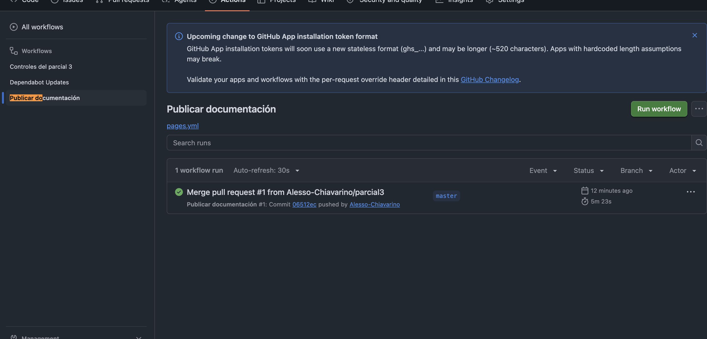
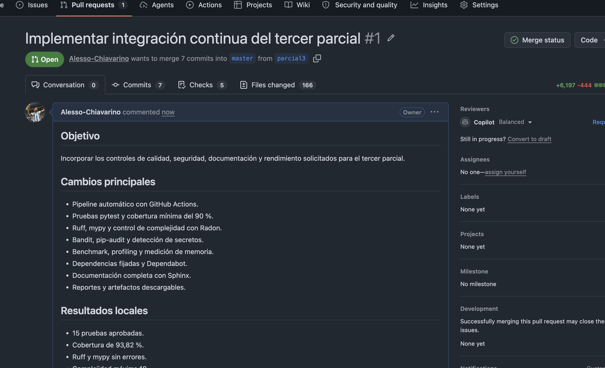
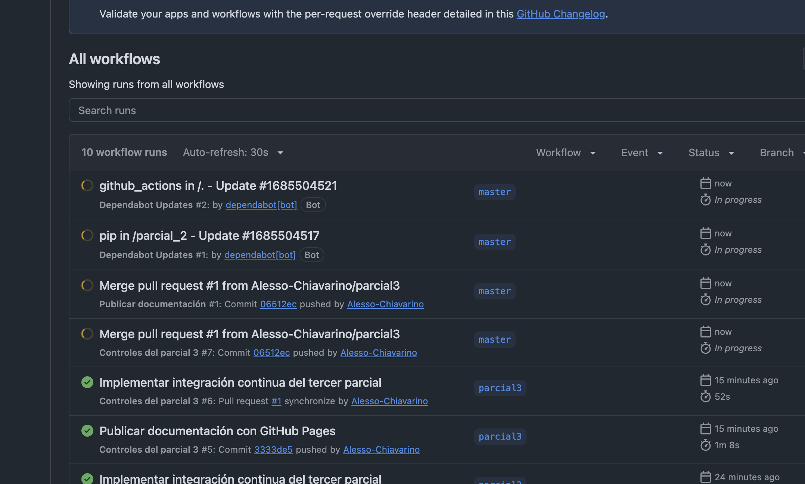
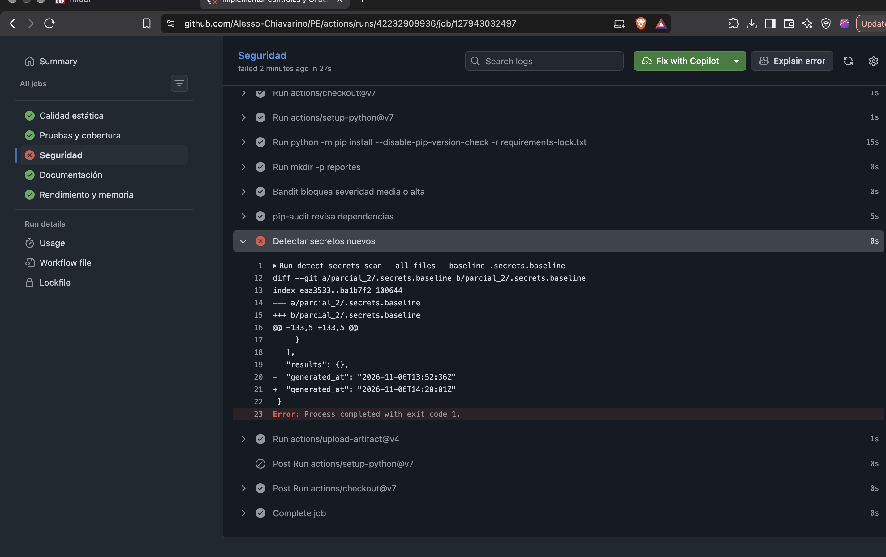
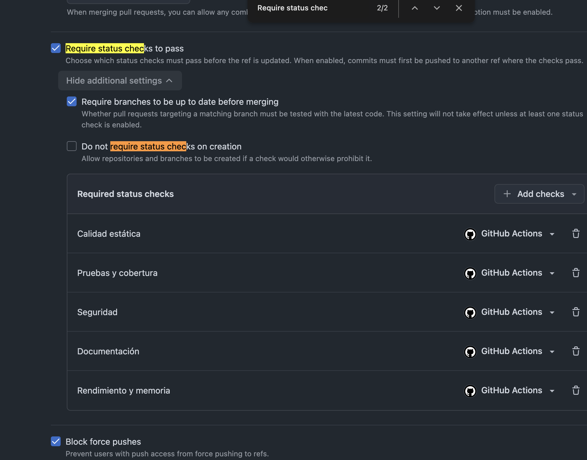
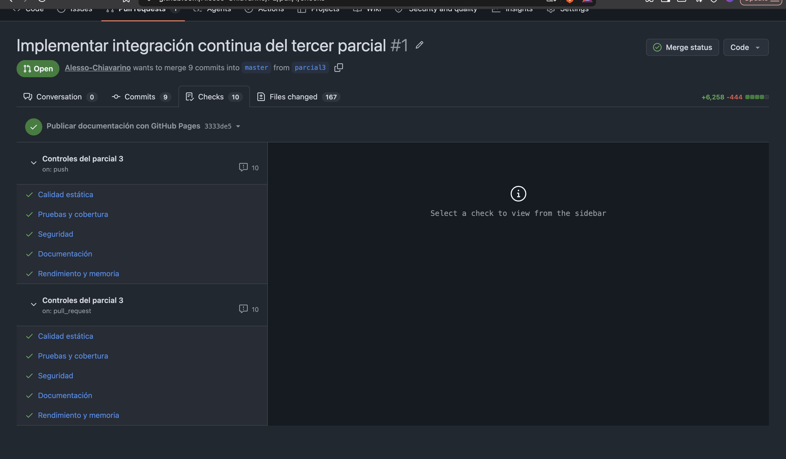

Programación Eficiente · Parcial 3
Calidad, seguridad
e integración continua
Evolución del sistema de detección de fraude: controles automáticos, documentación compartida y criterios verificables para integrar código.
PythonGitHub ActionsSphinxpytest
Código→Controles→Evidencia→Integración
Introducción
Objetivo del tercer parcial
Convertir las buenas prácticas del proyecto en reglas automáticas y demostrables.
- Centralizar documentación funcional, técnica y operativa.
- Ejecutar controles en cada
pushypull request. - Impedir integraciones que incumplan los umbrales acordados.
- Guardar reportes y artefactos como evidencia.
5trabajos de CI
15pruebas aprobadas
93,82 %de cobertura
1 · Documentación externa del proyecto
Una fuente compartida y siempre actualizada
Elección: Sphinx + GitHub Pages
La documentación vive en Git, se revisa con el código y se publica automáticamente.
- Descripción funcional, alcance y requisitos.
- Arquitectura, módulos y responsabilidades.
- Instalación, ejecución y configuración.
- Diseño técnico, pruebas, rendimiento y seguridad.
- Mantenimiento y comandos equivalentes al CI.

master.2 · Integración continua
GitHub Actions ejecuta el control automáticamente
01Eventopush o pull request
→
02EntornoPython + lockfile
→
03Controlescinco trabajos
→
04Decisiónaprobar o bloquear
¿Por qué esta plataforma?
Está integrada al repositorio, deja historial, comentarios y artefactos. No requiere mantener servidores adicionales.
¿Dónde está configurada?
.github/workflows/ci.yml define los eventos, herramientas, comandos y condiciones de aprobación.
2.1 · Plataforma
Trabajo con rama y revisión antes de integrar
- Creamos la rama
parcial3El segundo parcial quedó preservado. - Implementamos y validamos localmenteHerramientas y umbrales reproducibles.
- Abrimos el pull requestGitHub ejecutó todos los controles.
- Integramos en
masterSolo después de obtener resultados verdes.

2.2 · Matriz de controles
Una herramienta y un criterio para cada riesgo
Evidencia descargable
¿Dónde está el resultado de cada control?
reporte-complejidad
Radoncomplejidad.json
reportes-pruebas
pytest + pytest-covpytest.xmlcoverage.xml
reportes-rendimiento
Benchmark + CPU + memoriarendimiento.jsonmemoria.jsonperfilado*.prof y resumen
reportes-seguridad
Bandit + pip-audit + secretosbandit.jsonpip-audit.json.secrets.baseline
sitio-sphinx
Documentaciónindex.html y sitio completo
Resultados en los logs:Ruff · análisis estáticomypy · tipadoUn paso verde significa que no encontró errores bloqueantes.
Controles funcionales
Correctitud antes de rendimiento
15/15
pytest
Valida comportamiento esperado, archivos, detectores y monitoreo.
93,82 %
pytest-cov
Supera el umbral bloqueante del 90 % y genera XML.
0
mypy
Sin inconsistencias bloqueantes en contratos y tipos.
pytest --cov=. --cov-fail-under=90 --cov-report=xmlCalidad estática
Ruff, mypy y Radon detectan problemas temprano
RuffErrores, estilo, imports y construcciones problemáticas.
mypyContratos de tipos antes de ejecutar el programa.
RadonComplejidad ciclomática y funciones difíciles de mantener.
18
complejidad máxima
Límite definido: 20
Promedio medido: 2,56
Eficiencia medible
Benchmark, profiling y consumo de memoria
Versión inicial≈ 70×más lenta en la prueba representativa
Versión optimizada8,35 MiBpara 20.000 transacciones en streaming
Qué medimos
- Benchmark: tiempo de una operación representativa.
- cProfile: funciones que concentran CPU.
- tracemalloc: memoria máxima durante el procesamiento.
- Umbral: máximo 25 MiB en el escenario fijado.
Los resultados se guardan como artefactos descargables del pipeline.
Requisitos de seguridad
Tres superficies, tres controles complementarios
⌁
Código fuente
Bandit busca patrones inseguros. Bloqueamos severidad media o alta.
⬡
Dependencias
pip-audit contrasta paquetes con vulnerabilidades conocidas.
◆
Secretos
detect-secrets evita incorporar credenciales nuevas al repositorio.
Política: una vulnerabilidad confirmada media/alta bloquea; los falsos positivos se documentan. Los reportes se guardan en formatos legibles y JSON cuando corresponde.
Dependencias
Versiones fijadas y actualizaciones controladas
requirements-lock.txtfija versiones exactas.- pip-audit revisa vulnerabilidades conocidas.
- Dependabot propone actualizaciones mediante pull requests.
- Cada propuesta vuelve a pasar los mismos controles.

3 · Diseño del pipeline
Controles rápidos primero; mediciones costosas después
1Integraciónpush / PR
2PreparaciónPython + dependencias fijadas
3Calidad estáticaRuff · mypy · Radon
4Pruebaspytest · cobertura
5Seguridad y docsBandit · audit · Sphinx
6Eficienciabenchmark · CPU · memoria
7Resultadoestado + artefactos
Los cinco trabajos independientes se ejecutan en paralelo para reducir el tiempo total.
Cinco trabajos del CI
Cada etapa responde una pregunta diferente
Calidad estática
¿El código está bien escrito y es mantenible?
Ruff · mypy · RadonCero errores y complejidad dentro del límite.Pruebas y cobertura
¿El sistema funciona y cuánto código probamos?
pytest · pytest-cov15 pruebas aprobadas y cobertura mínima del 90 %.Seguridad
¿Hay riesgos en código, paquetes o secretos?
Bandit · pip-audit · detect-secretsLos hallazgos bloqueantes impiden integrar.Documentación
¿El sitio se construye y sus enlaces funcionan?
Sphinx · linkcheckConstrucción sin advertencias obligatorias.Rendimiento y memoria
¿El sistema sigue siendo eficiente?
Benchmark · cProfile · tracemallocSin regresión significativa y máximo 25 MiB.Ejecución: las primeras cuatro comienzan en paralelo; rendimiento espera que calidad y pruebas hayan aprobado.
Criterios de aprobación
Nuestras condiciones de éxito
Cada etapa observa un riesgo distinto del proyecto y tiene una regla objetiva para decidir si el cambio puede avanzar.
Calidad estática
Examina el código sin ejecutarlo: errores, tipos y funciones difíciles de mantener.
- Ruff y mypy: cero errores.
- Radon: máxima ≤ 20 y promedio ≤ 8.
Pruebas y cobertura
Ejecuta casos esperados y mide qué porcentaje del código fue recorrido.
- Las 15 pruebas deben aprobar.
- Cobertura ≥ 90 %.
Seguridad
Busca patrones inseguros, paquetes vulnerables y credenciales accidentales.
- Sin hallazgos medios o altos.
- Sin vulnerabilidades ni secretos nuevos.
Documentación
Convierte los archivos RST en un sitio y comprueba que sus enlaces funcionen.
- Sphinx construye sin errores.
- Enlaces válidos.
Rendimiento y memoria
Mide cuánto tarda, dónde consume CPU y cuál es su pico de memoria.
- Sin regresión superior al 25 %.
- Mismas alertas y memoria ≤ 25 MiB.
Condición final: los cinco checks deben quedar verdes para integrar el cambio en
master.3.1 · Qué ocurre si falla un control
El error es información y también una barrera
Durante la implementación, detect-secrets detectó una diferencia en la línea temporal de la baseline y el trabajo de seguridad terminó con código 1.
- El CI rechazó el cambioLa marca roja identificó el trabajo exacto.
- Analizamos el reporteNo era un secreto: era un campo de fecha generado.
- Ajustamos la comparaciónIgnoramos solo
generated_at. - ReejecutamosEl control quedó verde sin desactivarlo.

Aplicación de la política
master exige los cinco resultados verdes
Checks obligatorios
- Calidad estática
- Pruebas y cobertura
- Seguridad
- Documentación
- Rendimiento y memoria
Otras reglas de la rama
- Los cambios ingresan mediante pull request; no se trabaja directamente sobre
master. - La rama debe estar actualizada antes del merge.
- Se bloquean los force pushes.
- Se restringe la eliminación de la rama.

Resumen de implementación
Qué hicimos, en orden
- 01
Rama parcial3Preservamos el estado anterior.
- 02
Herramientas y umbralesCI, pruebas, calidad, seguridad y eficiencia.
- 03
Documentación SphinxContenido funcional, técnico y operativo.
- 04
Validación localCorregimos hasta aprobar los controles.
- 05
Push y pull requestGitHub Actions generó evidencia.
- 06
Protección de masterCinco checks obligatorios.
- 07
Merge y publicaciónPages desplegó la documentación.
Resultado
El proyecto quedó verificable y mantenible
Cada cambio deja una respuesta objetiva: aprobado o rechazado, con evidencia.
- PR integrado únicamente con controles verdes.
- Pipeline activo en
master. - Documentación pública y actualizada.
- Dependencias vigiladas por Dependabot.
- Reportes y artefactos descargables.
